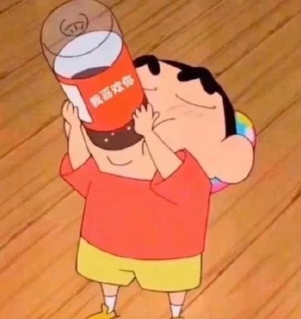

桥
下船后我问她为什么喜欢看桥，她说自己也不知道。
就像如果你问一个在水边玩耍的孩子他为什么喜欢玩水，获得的答案也会是一样。
那坐船呢？明明看了那么多座桥，为什么以前没想过坐船。
她笑了，是那种笑而不语的女孩子顽皮的笑，她回答道，你猜。
这我哪猜得出，坐船和看桥，都是依水而行，也是不同越过它的方式。
我不知道，找不出真正的原因。
但又或许是，看桥的人一直在走，坐船的人才会有所停留。
我想知道我和她想的会不会是一样。
海上酒馆
我转身在柜子里摸索了一会，拿出几个瓶子套弄了一番，不一会就像做戏法一样拿着两杯酒走到台前。
“左边这杯叫孤花月影，右边的是樱落海洋。”
他看了看两杯酒，然后毫不犹豫地拿起一杯喝进肚里。
窗外是我从未见过的幽蓝的天，那些许的温澜潮生的月光透过百月窗交错成一道道洁白的大小不一的线条，照进了那杯没动的酒里，显得是有些斑驳的光影。
霎那间我好像又感受到那抹春风，我就站在那，就好像春日正在把我推进这个奇怪的夏季，春天把我推向一个未知的方向。
海上酒馆-续
“或许你应该试试新的口味？”
“算了，这款酒喝惯了，喝别的不对味。”
我摇了摇手中拿着的酒杯，浅抿了一口，淡淡地说道。
“你知道我昨天去外面采风了吗？明明前两天在半空中还有点飘雪花，现在感觉春天好像真的要来了。我前些天还听家乡的朋友说南海公园的郁金香开了，他们去拍了照片。那些花真好看啊，只可惜我回去的时候没赶上这好时节。”
“花这种东西本来就是季节性的，没有花会一直盛开着。像我就不喜欢这种有些缥缈的东西，虽然是能握在手心，闻到香味的，可它谢了呢？你会因为花谢了而难过吗？”

橘子汽水
无论是小时候的故乡，初中时的玩伴，高中时听过的歌曲或者是那篇只写了开头的文章都或多或少带给我如同橘子汽水般甜蜜且很难割舍的滋味。
我清楚地明白，过去的一切正荒谬地离开，我闭眼伸出的手抓了又抓，可触摸到的，不过是那无尽的黑暗还有可憎懊悔的在旧时光里的些许残留。似乎是可预见的，光年里的我们渐行渐远，不知道自己正踏上的是哪一步的台阶。